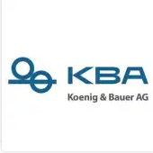

Rudolf Chudý
Senior Backend C# Developer
Microsoft Consultant & ProgramátorMicrosoft Consultant & Programmer
KvalifikaceQualifications
Jsem zkušený softwarový inženýr s více než 30 lety praxe v IT a hlubokou znalostí Microsoft technologií, především C#, moderního .NET (od .NET Core 3.1 až po aktuální .NET 10), Blazor a C++.
Věnuji se vývoji podnikových backendových systémů, REST a SOAP integračních služeb, webových portálů i desktopových MVVM / MVP aplikací s využitím Entity Framework Core i Dapper. Mám rozsáhlé zkušenosti s relačními databázemi i NoSQL (MongoDB, Redis) a frontendovými technologiemi.
I am an experienced software engineer with over 30 years of IT practice and deep knowledge of Microsoft technologies, specializing in C#, modern .NET (from .NET Core 3.1 to current .NET 10), Blazor, and C++.
I focus on developing enterprise backend systems, REST & SOAP integration services, web portals, and desktop MVVM / MVP applications utilizing Entity Framework Core and Dapper. I have extensive experience with relational databases and NoSQL (MongoDB, Redis) as well as frontend technologies.
- MS-SQL (SQL, T-SQL, LINQ)
- Oracle (SQL, PL/SQL, LINQ)
- PostgreSQL, MySQL, Firebird
- MongoDB, Redis (NoSQL)
Mám rozsáhlé zkušenosti se všemi fázemi vývoje softwaru, od úvodní analýzy přes architekturu až po samotnou implementaci, testování a nasazení. Kladu důraz na čistý kód (Clean Code), spolehlivost a schopnost efektivně propojit byznys s technologií.
I have extensive experience with all phases of software development, from initial analysis and architecture to implementation, testing, and deployment. I emphasize Clean Code, reliability, and bridging business requirements with technology.
ZnalostiSkills
C#, .NET (.NET Core – .NET 10), Blazor
SQL, T-SQL, PL/SQL, PostgreSQL, MongoDB
Entity Framework Core, Dapper, REST & SOAP API
Desktopové aplikace (MVVM / MVP, WPF, WinForms)Desktop Applications (MVVM / MVP, WPF, WinForms)
C / C++
JavaScript, Node.js, jQuery
ReferenceReferences

-
Ing. Radomír Kopecký
Ruda nám velice pomohl školením ASP .Net technologií.Ruda helped us immensely with ASP.NET technology training.
-
David Veselý
Pečlivý, spolehlivý, ochotný a přístupný novým technologiím. Vytrhl nám trn z paty.Diligent, reliable, helpful, and open to new technologies. He saved the day for us.
Kontakt na měContact
Orlická 976, Dobruška
Telefon: Phone: 309 195 777 024+
Email: zc.tseda@yduhc.flodur